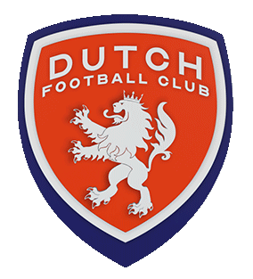
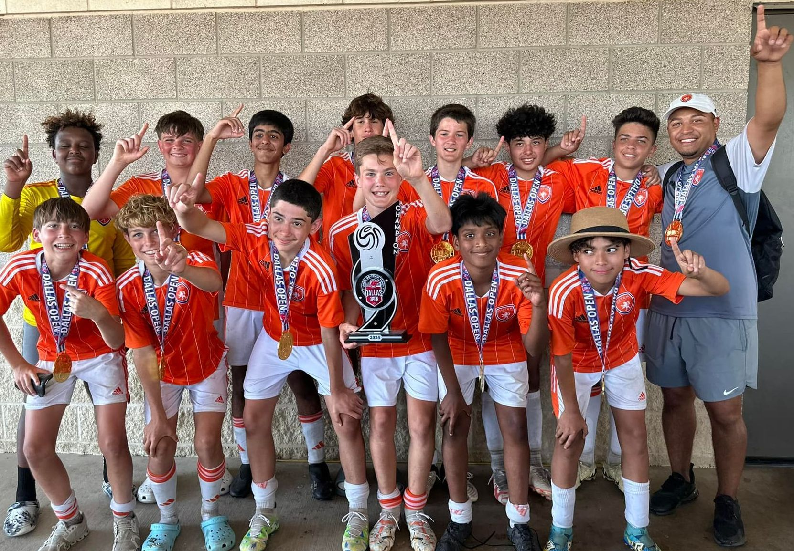

Dutch Football Club brings the legendary Total Football methodology — born in Holland, refined across 50 years — to the youth and adult players of North Dallas. Passion. Purpose. Glory.

Chapter 01 · The Origin"It's not the size of the dog in the fight but the size of the fight in the dog"… that rings so true for the tiny geographic country of The Netherlands, aka Holland. However, when it comes to the world game of football, the Dutch are titans.
The Dutch changed the trajectory of World Football when they introduced the revolutionary "Total Football" style of play in the '70s which fostered a culture, methodology, and philosophy that future generations still benefit from today. Fitting into Texas 16 times over and equaling the same number of participants in the game just in Texas alone, The Netherlands youth club system (Ajax, Feyenoord & PSV and many more), continue to produce a healthy consistent crop of intelligent and skillful players that dominate the top leagues throughout Europe.
The exceptional talent produced in Holland is displayed on its national team famously wearing the Orange Colors. By adopting and implementing the successful footballing methodology and philosophy of the Dutch, The Dutch Football Club is proud to bring this unique footballing culture to soccer enthusiasts in the North Dallas area.
For those wanting to take their game to the next level, Dutch Lions deliver a soccer experience that inspires a lifelong PASSION for the game, DEVELOPs an attacking-possessive style of play, and prepares players to COMPETE at the highest levels — helping each athlete reach their full footballing potential.
Club Philosophy Details →Dutch FC Select & Academy teams compete at various leagues. Advanced, intermediate and developmental level teams in each age group.
Our camps are based on the Dutch soccer philosophy and methodology that promotes an enjoyable learning environment heavily focused on development.
The TIPS skills method is a training curriculum that boosts your base line fundamentals — touch, control, scanning, decision-making.
Improve your Goalkeeper Fundamental skills with GKer coach Trey Nickel, and strengthen your foundation to grow into a stronger keeper.
Learn More & Tryout →Join our Game Plan for Life where we host FELLOWSHIP of CHRISTIAN ATHLETES (FCA) events, raise funds and volunteer at The Big Pack in Frisco for Feed My Starving Children (FMSC).
Learn More & Enroll →Partners & sponsors, college showcase support, and recruitment guidance for U16+ players chasing the next level.
Learn More →The Dutch FC 1st Team participates in the United Premier Soccer League (UPSL) which is the 4th tier of the US Soccer pyramid, just below the three professional tiers in the pyramid.
With an average age of 22.5 years, over 400 teams nation wide compete for 32 places in the National Playoff Bracket to become National Champions.
Learn More & Register →Not every college player starts where you'd expect.
Read Story →There's a belief in North Texas youth soccer you have to choose: beautiful football or winning. At Dutch FC, we reject that choice entirely.
Read →There is no right or wrong way to any journey, only trade offs.
Read →FOR IMMEDIATE RELEASE
Read →A challenging balancing act for coaches and confusing for players and parents. What's fair? It depends.
Read →A better way to Enjoy, Develop & Compete.
Read →The Dutch Pride of Lionesses on the prowl — ranked third in FIFA behind USA & Germany.
Read →The Dutch have earned a deserved reputation for their technical creativity, tactical awareness, and attacking possessive style. These qualities are instilled starting at the grass roots.
Read →May 11 – June 12, 2026. Fields of Faith Training Facilities. Stonebriar Community Church. 4801 Legendary Dr, Frisco, TX 75034. Bring your boots. Bring your fight.